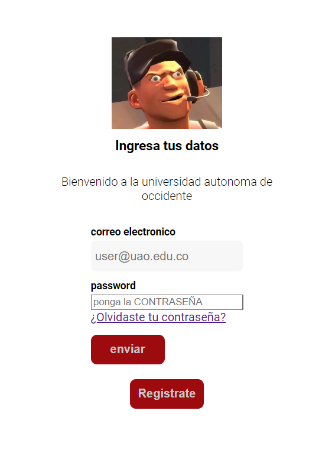
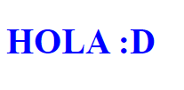

Proyectos
Este portafolio destaca una selección de proyectos clave realizados a lo largo de mi carrera profesional. Cada proyecto refleja mis habilidades en desarrollo de software, diseño gráfico, y otras disciplinas relevantes. Presento cómo he abordado desafíos complejos, utilizando herramientas avanzadas y adoptando enfoques innovadores. Cada sección incluye una descripción detallada del proyecto, el proceso seguido y los resultados obtenidos, demostrando mi compromiso con la excelencia y la creatividad.
Pagina de registro de usuario. 2.0
En esta página, los usuarios pueden crear una cuenta personal a través de un sencillo registro. Una vez registrados, pueden iniciar sesión para acceder a todas las funcionalidades del sistema. Si el usuario olvida su contraseña, puede utilizar la opción de recuperar contraseña, que enviará un enlace seguro a su correo electrónico para restablecerla. Finalmente, el usuario podrá establecer una nueva contraseña para asegurar su cuenta.
githubProyecto 2
Esta página web está diseñada para ofrecer una experiencia óptima en cualquier dispositivo. Gracias a su diseño adaptable, el contenido se ajusta automáticamente a la resolución de la pantalla, ya sea en un teléfono móvil, tablet o monitor de escritorio. Los elementos de la página cambian de tamaño y disposición según el tamaño de la pantalla, garantizando una navegación fluida y una presentación coherente en cualquier resolución.
githubProyecto 3
Esta página está dedicada a la presentación de contenido en video, ofreciendo una experiencia visual rica e interactiva. El video se integra de manera fluida en el diseño de la página, proporcionando a los usuarios una forma dinámica de consumir información. Además, el reproductor de video incluye opciones de control intuitivas, como reproducción, pausa, y ajuste de volumen, optimizadas para diferentes dispositivos y conexiones de internet.
github